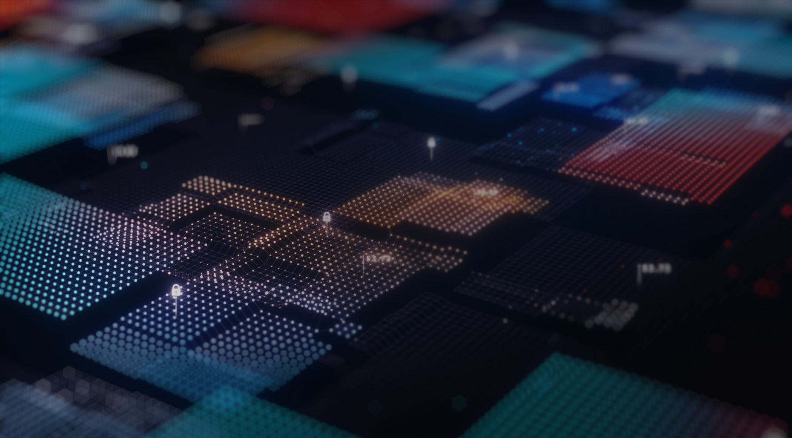

기업개요
최고의 기술력과 비즈니스에 대한 깊이있는 이해도를 바탕으로
고객과 산업의 Digital transformation을 실현합니다.
고객과 산업의 Digital transformation을 실현합니다.
서린정보기술은 1996년 고려아연 전산실로 부터 IT 전문 서비스 기업으로 분사하여
서울 본사, 부산, 울산 사업장을 거점으로 컨설팅, ITO, 하드웨어, 네트워크 및 보안 등
고객이 필요로 하는 모든 IT 서비스를 제공하고 있습니다.
회사명
서린정보기술 주식회사
대표이사
최범수
설립일
1996년 04월 12일
사업분야
컴퓨터/주변기기(서버,스토리지) 도매,
소프트웨어 개발/공급,
시스템통합 구축/판매
고객의 비즈니스가 더 빠르고 효율적으로 나아갈 수 있도록
최적의 IT 서비스를 제공합니다.
최적의 IT 서비스를 제공합니다.
금융, 제조 및 통신을 포함한 다양한 산업 분야에 걸쳐 산업에 대한
깊이 있는 이해와 기술 전문성을 바탕으로 고객을 위한 광범위한 IT 서비스를 제공합니다.
깊이 있는 이해와 기술 전문성을 바탕으로 고객을 위한 광범위한 IT 서비스를 제공합니다.


컨설팅
기업의 업무 프로세스를 올바른 방향으로 개선하고
디지털 전환을 통한 업무혁신을 실현시켜 드립니다.
인프라
IT 인프라 솔루션 및 하드웨어의 공급부터 설치까지
최적의 IT 환경을 구축해드립니다.
SI
정보 시스템의 개발에 관하여 상담하고 그에 따라
설계, 개발, 운용, 보수, 관리까지 해드립니다.
ITO
고객 업무 및 프로세스에 대한 이해를 바탕으로, 정보시스템 Total 서비스(통합 유지보수, 인프라 구축, 개발, IT기획 및 컨설팅 등)를 제공하며, 안정적이고 효율적인 정보서비스를 제공하고 있습니다.
하드웨어
IT 인프라 솔루션 및 하드웨어의 공급부터 설치까지
최적의 IT 환경을 구축해드립니다.